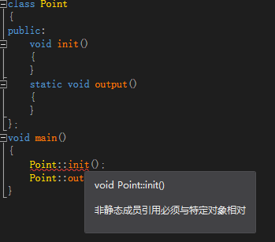

1. static とは何か？
static は C/C++ で非常によく使われる修飾子であり、変数の格納方法と可視性を制御するために使用される。
1.1 static の導入
関数内で定義された変数は、プログラムがその定義の場所に到達したときに、コンパイラがスタック上に領域を割り当てる。関数がスタック上に割り当てた領域は、その関数の実行が終了すると解放される。これにより問題が生じる：関数内のこの変数の値を次の呼び出しまで保存したい場合、どのように実現するのか？ 最も簡単に思いつく方法はグローバル変数として定義することだが、グローバル変数を定義すると多くの欠点がある。最も明らかな欠点は、この変数のアクセス範囲を壊してしまうことである（これにより、この関数内で定義された変数が、この関数だけの制御を受けなくなる）。static キーワードはこの問題をうまく解決できる。
また、C++ では、データオブジェクトが特定のオブジェクトではなくクラス全体にサービスを提供し、同時にクラスのカプセル化を壊さないように努める必要がある場合、つまり、このメンバーをクラスの内部に隠蔽し、外部から見えないようにする必要がある場合、それを静的データとして定義できる。
1.2 静的データの格納
グローバル（静的）記憶域：DATA セグメントと BSS セグメントに分かれる。DATA セグメント（グローバル初期化領域）は初期化されたグローバル変数と静的変数を格納する。BSS セグメント（グローバル未初期化領域）は初期化されていないグローバル変数と静的変数を格納する。プログラムの実行終了時に自動的に解放される。BSS セグメントはプログラムの実行前にシステムによって自動的に 0 にクリアされるため、初期化されていないグローバル変数と静的変数はプログラムの実行前にはすでに 0 になっている。静的データ領域に格納された変数は、プログラムの実行開始時に初期化が完了し、これが唯一の初期化となる。
C++ における static の内部実装メカニズム：静的データメンバーは、プログラムの実行開始時に存在していなければならない。関数はプログラム実行中に呼び出されるため、静的データメンバーはどの関数内でも領域の割り当てと初期化を行うことはできない。
このように、その領域割り当てには 3 つの可能な場所がある。1 つ目は、クラスの外部インターフェースとしてのヘッダーファイルであり、そこにクラス宣言がある。2 つ目は、クラス定義の内部実装であり、そこにクラスのメンバー関数の定義がある。3 つ目は、アプリケーションの main() 関数の前にあるグローバルデータの宣言と定義の場所である。
静的データメンバーは実際に領域を割り当てる必要があるため、クラスの宣言内で定義することはできない（データメンバーの宣言のみ可能）。クラス宣言はクラスの「サイズと仕様」を宣言するだけで、実際のメモリ割り当ては行わないため、クラス宣言内で定義として記述するのは誤りである。また、ヘッダーファイル内でクラス宣言の外側に定義することもできない。なぜなら、そのクラスを使用する複数のソースファイルで重複定義になってしまうからである。
static は、変数をスタック領域ではなくプログラムの静的記憶域に格納するようコンパイラに指示するために導入される。静的データメンバーは定義が現れた順序に従って初期化される。静的メンバーがネストしている場合は、ネストされたメンバーがすでに初期化されていることを保証する必要があることに注意する。破棄の順序は初期化の逆順である。
利点：メモリを節約できる。なぜなら、静的データメンバーはすべてのオブジェクトに共通であり、複数のオブジェクトに対して、静的データメンバーは 1 か所だけに格納され、すべてのオブジェクトで共用されるからである。静的データメンバーの値は各オブジェクトで同じであるが、その値は更新可能である。静的データメンバーの値を一度更新するだけで、すべてのオブジェクトが更新後の同じ値にアクセスできることが保証されるため、時間効率を向上できる。
2. C/C++ における static の役割
2.1 全体的に言うと
- (1) 変数を修飾する場合、static で修飾された静的ローカル変数は初期化を一度だけ実行し、ローカル変数のライフサイクルを延長し、プログラムの実行が終了するまで解放されない。
- (2) static がグローバル変数を修飾する場合、このグローバル変数はこのファイル内でのみアクセスでき、他のファイルからはアクセスできない。extern による外部宣言であっても不可である。
- (3) static が関数を修飾する場合、この関数はこのファイル内でのみ呼び出しでき、他のファイルからは呼び出せない。static で修飾された変数は、グローバルデータ領域の静的変数領域に格納される。グローバル静的変数とローカル静的変数はどちらもグローバルデータ領域にメモリが割り当てられる。初期化時には自動的に 0 に初期化される。
- (4) 解放されたくない場合、static を使用して修飾できる。例えば、関数内でスタック領域に格納される配列を修飾する場合。この配列を関数呼び出しの終了時に解放したくないなら、static で修飾できる。
- (5) データの安全性を考慮する（プログラムがグローバル変数を使用したい場合、まず static の使用を検討すべきである）。
2.2 静的変数と通常の変数
静的グローバル変数には以下の特徴がある：
- (1) 静的変数はすべてグローバルデータ領域にメモリが割り当てられる。後述する静的ローカル変数も含む。
- (2) 初期化されていない静的グローバル変数は、プログラムによって自動的に 0 に初期化される（関数本体内で宣言された自動変数の値はランダムである。明示的に初期化されない限り。一方、関数本体外で宣言された自動変数も 0 に初期化される）。
- (3) 静的グローバル変数は、それが宣言されているファイル全体で可視であり、ファイルの外では不可視である。
利点：静的グローバル変数は他のファイルから使用できない。他のファイルで同じ名前の変数を定義しても、衝突は発生しない。
(1) グローバル変数とグローバル静的変数の違い
- 1) グローバル変数は、明示的に static で修飾されていないグローバル変数である。グローバル変数はデフォルトで外部リンケージを持ち、スコープはプロジェクト全体である。あるファイル内で定義されたグローバル変数は、別のファイルで extern によるグローバル変数名の宣言を通じて使用できる。
- 2) グローバル静的変数は、明示的に static で修飾されたグローバル変数であり、スコープはこの変数が宣言されているファイルであり、他のファイルからは extern で宣言しても使用できない。
2.3 静的ローカル変数には以下の特徴がある：
- (1) この変数はグローバルデータ領域にメモリが割り当てられる。
- (2) 静的ローカル変数は、プログラムがこのオブジェクトの宣言の場所に到達したときに初めて初期化される。つまり、以後の関数呼び出しでは初期化が行われない。
- (3) 静的ローカル変数は通常、宣言の場所で初期化される。明示的に初期化されない場合、プログラムによって自動的に 0 に初期化される。
- (4) それはプログラムの実行が終了するまで常にグローバルデータ領域に存在し続ける。しかし、そのスコープはローカルスコープであり、それを定義した関数または文ブロックが終了すると、そのスコープも終了する。
一般的に、プログラムは新しく生成された動的データをヒープ領域に格納し、関数内の自動変数はスタック領域に格納する。自動変数は通常、関数の終了とともに領域が解放されるが、静的データ（関数内の静的ローカル変数であっても）はグローバルデータ領域に格納される。グローバルデータ領域のデータは、関数の終了によって領域が解放されることはない。
次の例を見てみよう：
例
出力結果は以下のとおり：

3. static の使い方
3.1 C++ の場合
static キーワードの最も基本的な使い方は次のとおり：
- 1. static で修飾された変数はクラス変数に属し、次のようにしてクラス名.変数名直接参照できる。クラスを new する必要はない。
- 2. static で修飾されたメソッドはクラスメソッドに属し、次のようにしてクラス名.メソッド名直接参照できる。クラスを new する必要はない。
static で修飾された変数と static で修飾されたメソッドは、まとめてクラスの静的リソースに属し、クラスのインスタンス間で共有される。言い換えれば、一箇所が変われば、どこでも変わる。
C++ では、静的メンバーは特定のオブジェクトではなくクラス全体に属する。静的メンバー変数は 1 つのコピーのみを格納し、すべてのオブジェクトで共用する。したがって、すべてのオブジェクトでそれを共有できる。静的メンバー変数を使用して複数のオブジェクト間でデータを共有しても、隠蔽の原則を壊さず、安全性を保証し、メモリも節約できる。
静的メンバーの定義または宣言には、キーワード static を付ける必要がある。静的メンバーはコロン 2 つ（::）を使用して参照できる。すなわち<クラス名>::<静的メンバー名>。
3.2 静的クラス関連
クラス名を使用して静的メンバー関数と非静的メンバー関数を呼び出す：
エラー：
'Point::init' : illegal call of non-static member function
結論 1：クラス名を使用してクラスの非静的メンバー関数を呼び出すことはできない。
クラスのオブジェクトを介して静的メンバ関数と非静的メンバ関数を呼び出す。
コンパイル成功。
結論2：クラスのオブジェクトは静的メンバ関数と非静的メンバ関数を使用できます。
クラスの静的メンバ関数内でクラスの非静的メンバを使用する。
コンパイルエラー：
error C2597: illegal reference to data member 'Point::m_x' in a static member function
静的メンバ関数はクラス全体に属し、クラスのオブジェクトをインスタンス化する前に既に空間が割り当てられています。一方、クラスの非静的メンバはクラスのオブジェクトをインスタンス化した後にのみメモリ空間が存在します。そのため、この呼び出しはエラーになります。あたかも変数を宣言せずに先に使用するようなものです。
結論3：静的メンバ関数内では非静的メンバを参照できません。
クラスの非静的メンバ関数内でクラスの静的メンバを使用する。
コンパイル成功。
結論4：クラスの非静的メンバ関数は静的メンバ関数を呼び出すことができますが、その逆はできません。
クラスの静的メンバ変数を使用する。
按 Ctrl+F7コンパイルはエラーなしですが、F7 を押して EXE プログラムを生成するとリンクエラーが発生します。
error LNK2001: unresolved external symbol "private: static int Point::m_nPointCount" (?m_nPointCount@Point@@0HA)
これは、クラスの静的メンバ変数は使用前に初期化する必要があるためです。
在 main()関数の前に追加するint Point::m_nPointCount = 0;再びコンパイル・リンクするとエラーはなくなり、プログラムを実行すると 1 が出力されます。
結論5：クラスの静的メンバ変数は使用前に初期化しなければなりません。
考察まとめ：静的リソースはクラスに属しますが、クラスから独立して存在します。J クラスのロードメカニズムの観点から言うと、静的リソースはクラスの初期化時にロードされ、非静的リソースはクラスのオブジェクトをインスタンス化するときにロードされます。クラスの初期化はクラスのオブジェクトのインスタンス化より先に行われます。例えばClass.forName("xxx")メソッドは、クラスを初期化しますが、オブジェクトをインスタンス化せず、そのクラスの静的リソースをロードするだけです。したがって、静的リソースにとっては、クラスにどのような非静的リソースがあるかを知ることは不可能です。しかし、非静的リソースにとっては事情が異なります。オブジェクトをインスタンス化した後に生成されるため、クラスに属するこれらのものをすべて認識できます。したがって、上記のいくつかの問題の答えは明確です：
- 1) 静的メソッドは非静的リソースを参照できますか？できません。オブジェクトをインスタンス化するときに初めて生成されるものを、初期化後に存在する静的リソースはまったく認識しません。
- 2) 静的メソッド内で静的リソースを参照できますか？できます。どちらもクラスの初期化時にロードされるため、互いに認識しています。
- 3) 非静的メソッド内で静的リソースを参照できますか？できます。非静的メソッドはインスタンスメソッドであり、オブジェクトをインスタンス化した後に生成されるため、クラスに属する内容をすべて認識します。
（static でクラスを修飾する：これは前述の使い方に比べて使用頻度がかなり少ないです。static は通常、クラスを修飾することはできません。もし static がクラスを修飾する場合、そのクラスは静的内部クラスであることを意味します（注意：static は内部クラスのみを修飾できます）。つまり匿名内部クラスです。スレッドプール ThreadPoolExecutor の4つの拒否メカニズムである CallerRunsPolicy、AbortPolicy、DiscardPolicy、DiscardOldestPolicy は静的内部クラスです。静的内部クラスの関連内容は、内部クラスを説明する際に詳しく述べます。
3.3 まとめ：
- (1) 静的メンバ関数内では非静的メンバを呼び出すことはできません。
- (2) 非静的メンバ関数内では静的メンバを呼び出すことができます。静的メンバはクラス自体に属し、クラスのオブジェクトが生成される前に既に存在するため、非静的メンバ関数内で静的メンバを呼び出すことができます。
- (3) 静的メンバ変数は使用前に初期化する必要があります（例：int MyClass::m_nNumber = 0;）、そうしないとリンク時にエラーが発生します。
一般的なまとめ：クラス内では、static は静的データメンバと静的メンバメソッドを修飾するために使用できます。
静的データメンバ
- (1) 静的データメンバは複数のオブジェクト間でのデータ共有を実現できます。これはクラスのすべてのオブジェクトの共有メンバであり、メモリ内で1つの領域のみを占有します。その値を変更すると、各オブジェクトのこのデータメンバの値も変更されます。
- (2) 静的データメンバはプログラムの実行開始時に領域が割り当てられ、プログラム終了後に解放されます。クラス内で静的データメンバが指定されていれば、オブジェクトを定義しなくても静的データメンバに領域が割り当てられます。
- (3) 静的データメンバは初期化できますが、クラスの外部でのみ初期化できます。静的データメンバに初期値を与えない場合、コンパイラは自動的に0に初期化します。
- (4) 静的データメンバはオブジェクト名でもクラス名でも参照できます。
静的メンバ関数
- (1) 静的メンバ関数は静的データメンバと同様に、クラスの静的メンバに属し、オブジェクトのメンバではありません。
- (2) 非静的メンバ関数には this ポインタがありますが、静的メンバ関数には this ポインタがありません。
- (3) 静的メンバ関数は主に静的データメンバにアクセスするために使用され、非静的メンバにはアクセスできません。
理解を深めるために、クラスの静的メンバ変数と関数を利用する例をもう1つ示します。この例では学生クラスを構築し、各学生クラスのオブジェクトが双方向リンクリストを構成します。静的メンバ変数でこの双方向リンクリストの先頭を記録し、静的メンバ関数でこの双方向リンクリストを出力します。
例
プログラムは次を出力します：

原文アドレス：https://www.cnblogs.com/33debug/p/7223869.html
クリックしてノートを共有
<p style="font-size:14px;">ノートは本記事の内容の拡張である必要があります！</p><br> <p style="font-size:12px;"><a href="../tougao.html" target="_blank">記事の投稿は、ここをクリックしてください</a></p> <p style="font-size:14px;"><a href="./runoob-user-test-intro.html" target="_blank">登録招待コードの取得方法</a></p> <h3 class="text-muted"><i class="fa fa-info-circle" aria-hidden="true"></i> ノートを共有する前に必ず<a href=".." class="runoob-pop">ログイン</a>！</h3> <p><a href="./runoob-user-test-intro.html" target="_blank">登録招待コードの取得方法</a></p>